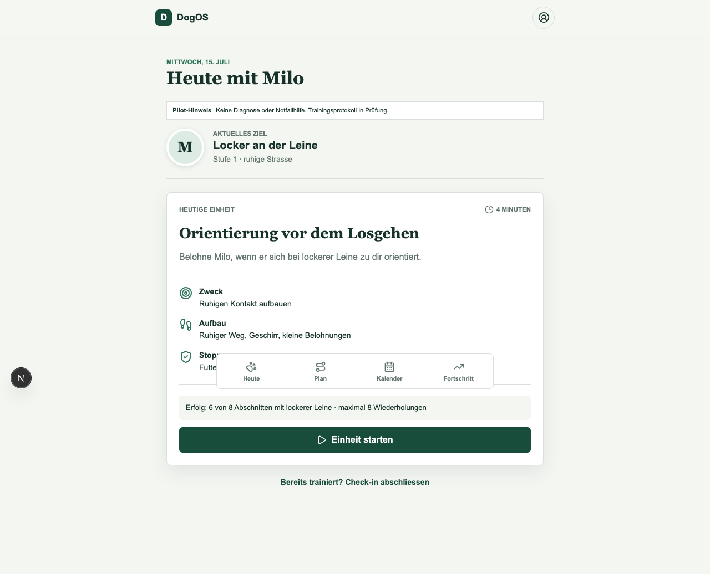

German low-risk journey
PASS · Plan generated and today action opened while Swiss context is preserved.

Development-only protocol. No diagnosis, emergency service, production provider release, or professional approval is claimed.
PASS · Plan generated and today action opened while Swiss context is preserved.

Development-only protocol. No diagnosis, emergency service, production provider release, or professional approval is claimed.